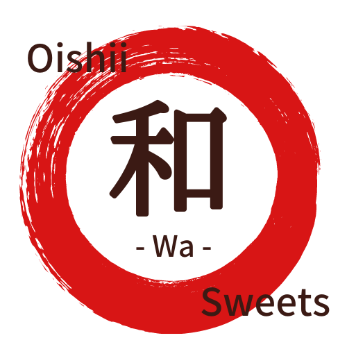

KL日本人会内、ロビーキオスクにて対面販売しております。
Sold in person at the lobby kiosk, Japan Club of Kuala Lumpur.
販売日：毎週土・日曜日（開催していない場合もございます。スケジュールをご確認ください）
Days: Saturdays & Sundays (not every week — please check the schedule)
販売時間：10:00〜18:00
Hours: 10am–6pm
Handmade Japanese wagashi, made to enjoy right here in KL.
This Week's Specials & Ordering
Everyday Favourites
クアラルンプール市内限定・Grab配送
Kuala Lumpur city only, delivered via Grab
ご不明な点はお気軽にWhatsAppで / Questions? Message us anytime
Our Story
Handmade Japanese wagashi, made to enjoy right here in Kuala Lumpur.
ひとつひとつ手作りで、丁寧に。季節を感じられる和菓子を、週末は対面で、平日はWhatsAppからオンラインでお届けしています。
Every piece is made by hand, with care — bringing a sense of the season to your table. Sold in person on weekends, and by online order via WhatsApp during the week.
異国の地クアラルンプールで、日本の和菓子の温かさをそのままに。これからも変わらぬ味を、丁寧にお届けします。
Even far from home, we keep the warmth of Japanese wagashi just as it is — and will keep delivering that same care, one sweet at a time.
KL日本人会内、ロビーキオスクにて対面販売しております。
Sold in person at the lobby kiosk, Japan Club of Kuala Lumpur.
販売日：毎週土・日曜日（開催していない場合もございます。スケジュールをご確認ください）
Days: Saturdays & Sundays (not every week — please check the schedule)
販売時間：10:00〜18:00
Hours: 10am–6pm